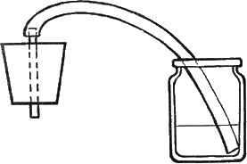

Самогон, водка и настойки. Рецепты приготовления домашнего вина .

Бузинное вино
Рецепт № 1
Ягоды бузины промыть проточной водой и оставить на полчаса, чтобы стекла вода. В эмалированную кастрюлю сложить чистые ягоды и залить 10 л воды. Кастрюлю поставить на плиту и варить 2–2,5 часа. Затем жидкость процедить. Полученный сок опять вылить в кастрюлю и добавить 2 кг сахара. Сироп варить еще час на медленном огне, после чего отставить и остудить. Как только жидкость станет слегка теплой, добавить 1 столовую ложку свежих дрожжей, предварительно растворив в небольшом количестве сиропа. Жидкость тщательно перемешать и накрыть крышкой, а затем сукном.
Когда смесь перебродит, собрать и удалить образовавшуюся на поверхности пену. Слить в деревянный бочонок, плотно накрыть и настаивать 4 недели. Полученный напиток разливают в бутылки и засмаливают. Для хранения опускают в погреб.
Рецепт № 2
В сухую погоду собрать ягоды бузины и тщательно вымыть под проточной водой. На водяной бане ягоды томить 1 час (лучше поставить в духовку). После того как ягоды остынут, выжать сок, поместив их под пресс. На 1,2 л сока положить 200 г сахарного песка и поставить в теплое место для брожения. Брожение сока должно происходить в открытом сосуде 30–35 дней, после чего разлить по бутылкам, плотно закупорить, можно засмолить, и поставить в прохладное место. Вино, приготовленное таким способом, добротно и имеет прекрасный аромат. При употреблении его можно добавлять к вину из изюма. Это создает неповторимый букет.
Брусничное вино
Рецепт № 1
2 кг ягод брусники вымыть и оставить на 20 минут, чтобы стекла вода. Поместить их в деревянный бочонок и залить 5 л красного вина. Посуду плотно закрыть. Если нет деревянного бочонка, можно использовать и стеклянные баллоны. Настаивать ягоды 2 месяца, после чего жидкость слить. Ягоды подавить и отжать через двойной слой марли. Полученную смесь соединить с вином, перемешать и настаивать еще месяц в плотно закрытой посуде. По прошествии этого времени вино аккуратно разлить по бутылкам, чтобы не взболтать образовавшегося осадка. Бутылки плотно закупорить, можно засмолить, и поставить в любое прохладное место. Их следует хранить в горизонтальном положении и как можно меньше подвергать взбалтыванию.
Рецепт № 2
2 кг ягод брусники тщательно вымыть проточной водой и оставить на некоторое время, чтобы стекла вода. В приготовленную емкость поместить небольшое количество ягод, переложить слоем полыни (всего полыни требуется 200 г). Затем опять ягоды, и так продолжать перекладывать слоями. Полученную массу залить 6 л вина, закрыть и поставить в темное место на 2 месяца, после чего вино слить и процедить. Из оставшейся массы удалить веточки полыни, а ягоды отжать. Полученную смесь соединить с вином и настаивать еще дней 20–25. Затем разливать в бутылки, не взбалтывая осадка. Бутылки плотно закупорить, засмолить и хранить в прохладном месте.
Вишневое вино
Рецепт № 1
Из 1,5 кг вишен удаляют косточки, причем половина их дробится, а другая половина выбрасывается. Вишневую массу раздавить и сложить в приготовленную стеклянную банку или бочонок. Залить сахарным сиропом из 1,5 л воды и 1 кг сахара. Воду и сахар помещают в кастрюлю И варят до тех пор, пока на поверхности перестанет образовываться пенка, которую непременно удаляют. Сироп охлаждают до 60–65 °C и: только тогда заливают им вишневую массу. Сюда же добавляют измельченные вишневые косточки. Смесь перемешивают, закрывают и настаивают 10–12 дней, причем температура в помещении должна быть 16–18 °C. В течение этого времени смесь помешивают деревянной ложкой 2–3 раза в день. Это делается для того, чтобы предупредить появление плесени и уксусного брожения на поверхности вина. Сосуд должен быть заполнен так, чтобы 1 /10 его оставалась свободной и сок не перемешивался во время бурного брожения.
Через 10–12 дней полученное вино процедить через двойной слой марли, смесь из вишен и косточек отжать и смешать с вином. Затем напиток залить в бутылку, плотно закупорить и настаивать 5–6 недель. Пробки должны быть из каучука, дерева или корки. Это необходимо для того, чтобы можно было в нее вставить стеклянную трубку, на которую надевают резиновую трубку и погружают в сосуд с водой. За время настаивания осадок выпадет на дно и вино станет прозрачным. После настаивания напиток разливают по бутылкам, плотно закупоривают и выдерживают. Выдержка улучшает вкус и аромат. Через 2 месяца вино готово и его можно употреблять. Хранить напиток лучше всего при температуре 10–12 єС не больше года. Открытую бутылку лучше сразу распить, так как при хранении вино окисляется и портится.
Рецепт № 2
800 г вишен очистить от косточек и хвостиков. Полученную вишневую массу раздавить и поместить в приготовленную посуду (лучше бочонок). 1 /3 вишневых косточек истолочь. В отдельную кастрюлю положить измельченные косточки, влить немного вишневого сока и 100 г сахара. Закипятить и охладить. Вишневую массу залить полученной смесью и закрыть. Настаивать при температуре 12,5—14 єС в течение 1,5–2 месяцев. По окончании брожения процедить, отжать через слой марли массу, состоящую из вишен и дробленых косточек, и смешать с вином. Вино поместить в бутыль и закрыть резиновой пробкой, в середине которой должна быть стеклянная трубка. На нее надеть резиновую трубку и опустить в сосуд с водой. Настаивать 20 дней. За это время вино станет прозрачным, а на дне образуется осадок.
Напиток разлить в бутылки, плотно закупорить, можно даже засмолить. В прохладном месте настаивать два месяца, после чего вино готово. Но такое вино долго не хранится. Поэтому его желательно выпить в течение одного года со Дня разлива в бутылки. Хранить в прохладном месте.
Рецепт № 3
Из 6 кг вишен удалить косточки и смешать с 800 г черной смородины. Полученную массу хорошенько протереть. 135 г вишневых косточек истолочь в отдельной посуде. Лучше всего использовать деревянную толкушку. В приготовленную посуду поместить вишнево-смородинную массу, измельченные вишневые косточки и 500 г сахара. Все перемешать и накрыть виноградным листом. Емкость плотно закрыть и на хранение зарыть в песок (можно емкость обсыпать песком). В таком положении оставить до тех пор, пока смесь не начнет бродить. Во время брожения следить за тем, чтобы бочонок был всегда полон, каждый раз добавляя вишневый сок. Когда смесь перестанет бродить, ее процедить, отжать сок из ягод, все смешать и опять поставить бродить. Закупорить пробкой, имеющей стеклянную трубку с присоединенной к ней резиновой. Второй конец резиновой трубки поместить в банку с водой и настаивать два месяца. После чего прозрачное вино разлить в бутылки, чтобы не потревожить осадка, осевшего на дне. Посуду закупорить, можно даже засмолить, и поставить в погреб. Через 20–25 дней вино готово к употреблению.
Вишневое вино без брожения
Для приготовления 3 л сока нужно взять черные сладкие вишни и удалить из них косточки и хвостики. Вишневую мякоть оставить на 24–30 часов. Затем смесь отжать под прессом и слить в приготовленную емкость. Туда же добавить 1 кг сахара, который растворить в небольшом количестве сока, и 0,6 л хорошей водки. Полученную смесь перемешать и настаивать месяц. После того как смесь настоялась, ее разливают в бутылки. Если вино недостаточно светлое и прозрачное, то его очищают рыбьим клеем. Плотно закупоренные бутылки опускают в погреб. Через 2–3 месяца вино готово к употреблению.
Грушевое вино
Лучше брать лесные груши, они более ароматные. Довольно спелые груши истолочь и, поставив под пресс, выдавить сок. Приготовленную массу залить водой и настоять 1–2 дня, после чего снова выдавить под прессом сок. Смешать полученные соки, поместить в кастрюлю и варить на медленном огне. Затем усилить огонь почти до кипения, удаляя с поверхности образовавшуюся пену. Вареный сок снять с огня и остудить до 44–50 °C. Для остывания жидкость лучше поместить в деревянную посуду. Сок процедить и вновь поставить на огонь. Затем вновь охладить до 44–50 °C. Операцию повторять 2–3 раза, пока сок не приобретет терпкости. Раствор слить в бочку, не доливая до верха 5–6 см. Бочку заткнуть, но оставить маленькое отверстие для выхода газа. По окончании брожения вино процедить и можно разливать в бутылки. Во время приготовления напитка к грушевому соку можно добавлять различные сахаристые вещества, такие как очищенный мед, сахар, картофельную патоку, изюм и т. д. Вино, настоянное в бутылках 1–1,5 месяца, готово к употреблению. Хранить в прохладном месте, лучше всего в погребе.
Грушево-яблочное вино
Груши и яблоки являются наиболее подходящим сырьем для изготовления вина. Они занимают второе место после винограда. За границей грушево-яблочное вино известно как сидр. Этот напиток распространен повсеместно.
На вино идут различные сорта груш и яблок. Вина из груш как таковые производятся довольно редко. Обычно их используют как компонент для различных плодово-ягодных вин.
Плоды тщательно перемывают проточной дой и удаляют все загнившие части. Для измельчения можно использовать терку или мясорубку. Полученную массу помещают в приготовленную чистую емкость и оставляют на двое суток. За это время ее несколько раз помешивают деревянной ложкой. Чтобы выход вина составил 10 частей, нужно взять 12 частей плодов, причем 1 /3 должна состоять из сладких плодов, 2 /3 – из кислых.
Через двое суток массу отпрессовывают и полученный сок переливают в бочонок. Отжатую массу разбавляют водой, перемешивают и помещают в приготовленную емкость для брожения. Полученные сусла по окончании бурного брожения смешивают. Для того чтобы усилить аромат вина, в бродящее сусло кладут холщовый мешочек с небольшим количеством свежезасушенных цветов бузины и 2–3 щепотками кориандра. Мешочек затягивают шнурком, чтобы содержимое не попало в напиток. Настойку процеживают и разливают в бутылки. Если вино недостаточно прозрачно, то добавляют немного рыбьего клея. Через месяц вино готово к употреблению.
Ежевичное вино
Прекрасное сладкое вино получается из ягод ежевики. По вкусу оно напоминает старый портвейн. Сок, полученный из ежевики, легко бродит и почти не подвергается заболеваниям. Брожение может проходить в помещении с довольно низкой температурой. Ягоды для приготовления вина лучше всего брать хорошо вызревшие, иначе напиток может получиться слишком водянистым и без должного аромата.
Рецепт № 1
Вначале приготовить сок смородины (2 л), так как эти ягоды созревают значительно раньше. Чтобы сок сохранился и не забродил до того времени, когда будет изготовлен сок из ягод ежевики (2 л), следует поступить следующим образом. Во-первых, бочонок, в котором будет храниться сок, слегка окурить. Ягоды смородины поместить в кастрюлю и распаривать в течение часа на водяной бане. Затем с помощью пресса отжать сок и в эмалированной кастрюле прокипятить на медленном огне 3–5 минут. Остудить до 35–40 °C, перелить в бочонок и плотно закрыть.
Так смородинный сок будет храниться до приготовления ежевичного.
Хорошо вызревшие ягоды ежевики кладут под пресс. Полученный сок фильтруют. Затем в емкость помещают 2 л ежевичного сока, 2 л смородинного сока, 5 л воды и 2–3 кг сахара, предварительно растворенного в небольшом количестве жидкости. Полученную смесь перемешивают и ставят для брожения. В процессе брожения содержание винной кислоты в растворе не будет превышать 5 %. Настаивают 1–1,5 месяца, после чего процеживают и разливают в бутылки, которые плотно закупоривают. Хранят в погребе или любом другом прохладном месте
Рецепт № 2
Для приготовления столового ежевичного вина требуется 3,5 л ежевичного сока, 3,5 л воды, 1,8 кг сахара песка, 7,5 г винного камня. Из этих компонентов получается 7,5 л прекрасного ароматного вина. Сахар и винный камень предварительно растворить в горячей воде и остудить. Когда сироп остынет до температуры 35–40 єС, его можно смешать с соком (сироп не должен быть слишком холодным или слишком горячим).
Чистые ягоды ежевики кладут в определенную емкость и пересыпают небольшим количеством сахара. Настаивают 24 часа, после чего ягоды перетирают. Полученную ягодную массу ставят в помещение, где температура должна быть 16–17 °C. Смесь необходимо изредка помешивать. После того как смесь настоится, сок выжимают под прессом. Для получения более ка чественного напитка настаивать нужно 30–35 дней, закрыв емкость пробкой, имеющей стеклянный стержень, на который надета резиновая трубка, другой конец ее помещен в банку с водой. Вино приобретет прозрачность, и его можно разлить в бутылки, плотно закупорить и засмолить. Хранить в погребе. Через два месяца вино готово к употреблению.
Земляничное вино
Рецепт № 1
Потребуется 4 л земляничного сока, 2 л воды, 1,2 кг сахара, 10 г виннокаменной кислоты, 0,5 л дистиллированной воды.
Хорошо очищенные ягоды земляники помещают в эмалированную посуду и засыпают сахаром. Настаивают сутки, после чего добавляют воду, тщательно перемешивают. Полученную жидкость заливают в бутыль и закрывают. Ставят в прохладное место и настаивают 2–3 месяца. Перебродившую жидкость нужно процедить, а ягодную массу отжать и удалить. Полученное после первого настаивания вино не имеет должной прозрачности, поэтому напиток настаивают в течение месяца в прохладном месте, закрывают бутыль пробкой, содержащей стеклянный стержень, на который надета резиновая трубка. Другой конец помещен в сосуд с водой. Вино готово, и его нужно разлить в бутылки. Открытое вино долго хранить не рекомендуется, поскольку при взаимодействии с воздухом оно окисляется и теряет приобретенный аромат.
Рецепт № 2
Ягоды промыть проточной водой и оставить на 2–3 часа, чтобы стекла вода. В приготовленную посуду складывать слоями ягоды (4 кг), пересыпая сахаром (1,2 кг), причем ягоды не раздавливают. На дно посуды насыпают ягоды, а лишь затем сахар и т. д. Ставят в прохладное место и настаивают 1,5–2 суток. Полученную жидкость процеживают, а сок из ягод отжимают. Воды берут ровно столько, сколько получилось сока. Переливают в стеклянную бутыль и ставят для брожения в помещение с температурой 10–15 °C. В конце брожения добавляют немного сахара, и вино готово. Разливают в бутылки и ставят в погреб на хранение.
Клубничное вино
На 1,5 кг ягод клубники берут 1 кг сахара и 1,5 л воды. При таком соотношении крепость вина составляет 16–18°. В процессе брожения сахар добавляют в два этапа, что позволяет брожению начаться раньше и протекать более плодотворно.
Из 1 кг сахара и 1,5 л воды варят сироп и охлаждают до температуры парного молока. Клубнику разминают, помещают в бутыль и заливают приготовленным сиропом. Полученную смесь оставляют в помещении с температурой 17–18 °C. Во время брожения смесь рекомендуется помешивать деревянной ложкой 2–3 раза в день. Это проделывается для того, чтобы на поверхности не появилось плесени и для предупреждения появления уксусного брожения. Ложки, сделанные из какого-либо металла, не подходят. Через 8-10 дней сок процеживают, ягоды отжимают. Заливают в бутылку, где продолжится «тихое» брожение, которое длится 5–6 недель в емкости, закрывают пробкой со вставленной внутрь стеклянной трубкой, на которую надевается резиновая. Другой конец погружают в сосуд с водой. В результате «тихого» брожения осадок выпадает на дно, и вино приобретает прозрачность. Его наливают в бутылки, плотно укупоривают пробками и выдерживают. Во время выдержки процессы, происходящие в напитке, улучшают аромат и вкус. Через два месяца вино готово к употреблению. Хранят его при температуре 10–12 єС не больше года.
Крыжовниковое вино
Рецепт № 1
Ягоды крыжовника берут в таком количестве, чтобы получился 1 л чистого сока. Кроме этого, требуется 1,7–1,8 л воды и 700–800 г сахара.
Для приготовления вина можно использовать как недозревшие ягоды, так и вполне спелые. При зрелых ягодах процесс брожения наступает гораздо позднее, но вино отличается хорошим ароматом и превосходным вкусом. Ягоды помещают в эмалированную кастрюлю, раздавливают и добавляют небольшое количество воды и сахара. Посуду ставят в прохладное место, помешивая 1–2 раза в день деревянной ложкой. После 3–4 дней массу помещают под пресс, и полученный сок переливают в бутыль, добавляя сахар и воду. Ставят для брожения в теплое помещение. После брожения вино процеживают и разливают в бутылки. Хранят в прохладном месте.
Рецепт № 2
Это вино приготавливают из не совсем зрелых ягод, поэтому способ немного отличается от предыдущего – из спелых ягод.
2 части ягод раздавливают и помещают в бочонок. Ягоды раздавливают как можно тщательнее. К полученной массе добавляют 2 части воды. Настаивают одни сутки, после чего кашицу отжимают через грубое полотно, прибавляя к смеси 5 частей воды. К отжатому соку добавляют 1–1,2 части сахара. Затем полученную жидкость переливают в бочонок и закрывают крышкой. Ставят в помещение при температуре от 10–15 °C и настаивают 1–2 дня. По окончании брожения вино будет мутным и недостаточно прозрачным. Очистить от осадка его можно рыбьим клеем.
Образовавшийся осадок опустится на дно. Вино нужно аккуратно слить, не смешав жидкости.
Для крепости в чистое вино можно добавить хорошей водки. Количество водки берется в два раза больше, чем использованное количество сахара. В данном случае водка составляет 2 части. Жидкость перемешивают деревянной ложкой и разливают в бутылки, которые плотно закупоривают и засмаливают. Хранить лучше при температуре 8-10 °C в течение одного месяца, после чего вино готово к употреблению. В дальнейшем температуру при хранении можно уменьшить, поэтому бутылки лучше всего поместить в погреб.
Рецепт № 3
По этому рецепту делают десертное вино. Для начала из ягод нужно получить чистый сок (1л). Крыжовник моют проточной водой и удаляют мусор. Ягоды кладут в кастрюлю и распаривают в течение часа на водяной бане. Распаренную массу остужают и раздавливают. Кастрюлю накрывают крышкой и ставят на 2–3 дня в прохладное место. После чего массу прессуют. Воды нужно взять столько, сколько получилось сока, и облить выжимки. Размешать смесь и оставить на три дня, после чего еще раз отпрессовать. Оба сока, полученные после двух прессований, смешать и добавить 250–300 г сахара на 1 л сока. Полученный раствор залить в бутыль, закрыть и настаивать 1,5–2 месяца, после чего разлить в бутылки, плотно закупорить и засмолить. Если вино недостаточно прозрачно, то в напиток добавляют немного рыбьего клея.
Рецепт№4
Готовят сок из ягод. Для этого чистые ягоды пропаривают и прессуют. Водой, количество которой должно быть равным полученному соку, залить выжимки. Настоять 2 дня, после чего еще раз отпрессовать. Соки, полученные после двух прессований, смешать, добавить сахар. Поместить в бутыль и поставить в теплое место для брожения. После чего вино процедить и поставить на хранение. Алкоголь, который получился в большом количестве, делает вино прочным и менее доступным порче.
Малиновое вино
Рецепта № 1
Готовят сироп из сахара и воды. В эмалированную кастрюлю насыпают 1 кг сахара и заливают 1,5 л воды. Ставят на огонь и кипятят. Варят до тех пор, пока на поверхности перестанет образовываться пенка, которую нужно периодически удалять. Сироп готов, и его снимают с огня. Охлаждают до температуры парного молока. Ягоды кладут в приготовленную емкость и заливают сиропом.
Смесь настаивают при температуре 16–18 °C, перемешивая 2–3 раза в день деревянной ложкой. Чтобы сок не переливался во время брожения, емкость оставляют незаполненной на 1/10.
Через 8 дней сок отделяют от плодовой массы и разливают в бутылки, где будет продолжаться «тихое» брожение. Поэтому крышку нужно взять деревянную или каучуковую, так как внутрь вставляют стеклянную трубку, на которую надевают резиновую. Другой конец помещают в банку с водой. Вино настаивается 5–6 недель.
Через 6 недель осадок опустится на дно и вино станет прозрачным. Его разливают в бутылки, плотно закрывают и помещают в погреб для выдержки. Через 2 месяца вино готово к употреблению. За это время улучшаются вкус и аромат. Готовое вино хранят при температуре 10 єС, но не больше года.
Рецепт № 2
1,5 кг малины, 3 л воды, 1 кг сахара.
Это вино делают так же, как описано в рецепте № 1, но увеличивают в два раза количество сахара. Однако такое вино получается менее стойкое и содержание спирта составляет 10–12 °C. При желании получить более крепкое вино можно добавить хорошей водки, в которой не будут присутствовать сивушные масла, иначе малиновый аромат уничтожится.
Еще один недостаток этого вина – оно легко подвергается уксусному брожению.
Рецепт № 3
Ягоды малины раздавливают и заливают водой. На 10 частей ягод берут 4 части воды. Лучше всего ягодную массу и воду поместить в эмалированную кастрюлю, накрыть крышкой и настаивать в теплом помещении. Через два дня жидкость процедить, а ягоды тщательно отжать. После процеживания к полученному соку добавить 1 часть смородинного сока. 5 частей сахара растворить в небольшом количестве жидкости, смешать с малиновым и смородинным соками. Вино помещают в емкость и ставят для брожения. После чего разливают в бутылки, плотно закупоривают и смолят. Если после брожения напиток не получает желаемой прозрачности, то можно добавить немного рыбьего клея и дать постоять еще 8-10 дней, а уже потом разливать в бутылки.
Полынное вино
Для приготовления полынного вина можно использовать любое готовое вино: яблочное, грушевое, малиновое, вишневое, виноградное и т. д. Полынь придаст напитку своеобразный аромат и слегка терпковатый вкус.
Лучше всего брать верхние части растений, а если у вас не растет полынь, то ее можно приобрести в любой аптеке. Следует обратить особое внимание на срок годности травы, так как это может повлиять на вкус вина. В процессе приготовления напитка лучше всего использовать продолговатый мешочек, в который кладут траву. Нежелательно, чтобы части травы оказались в вине. Вместо мешочка можно использовать марлю или бинт, сложив его два-три раза и крепко завязав.
Рецепт № 1
В приготовленный мешочек положить свежей или сушеной полыни. Через него два-три раза процедить готовое вино. Оно может быть холодным, но для большего эффекта его лучше слегка I подогреть, но ни в коем случае не кипятить. Как только вино примет полынный вкус, можно добавить немного сахара (количество зависит от вашего вкуса).
Рецепт № 2
Есть и другой способ придать вину аромат полыни. В мешочек поместить небольшое количество сухих или свежих веточек полыни. Хорошо завязать, чтобы он не развязался в процессе настаивания, и опустить в вино. Держать до тех пор, пока вино не насытится ароматом. В зависимости от вкуса мешочек можно держать там сколь угодно. Готовое вино слегка подслащивают. Разливают в бутылки и плотно закупоривают. Хранят в погребе. Напиток можно употреблять через 3–4 недели.
Сливовое вино
Рецепт № 1
Сливы промыть проточной водой, сложить в кастрюлю и залить водой. Варить на медленном огне 5–7 минут, после чего остудить на воздухе. Такую операцию проделать 2–3 раза.
Остывшую сливовую массу поместить в приготовленную емкость и оставить бродить при температуре 20–25 °C. После брожения смесь отпрессовать и из фруктов тщательно выдавить сок. Полученную смесь оставить опять для брожения. Если и после этого вино не будет достаточно прозрачным, добавить немного рыбьего клея. Полученный напиток разлить в бутылки и поставить в погреб. Через 4–5 недель вино готово к употреблению.
Рецепт № 2
Белые сливы сложить в эмалированную посуду и залить водой. Сливы проварить и охладить на открытом воздухе. После чего добавить сахар и еще раз поставить варить. Прокипевшую 2–3 минуты массу опять охладить на воздухе и положить мешочек с 3–4 бутонами гвоздики. Из остывшей смеси мешочек удалить, смесь процедить. В приготовленную емкость вылить полученный сок и настоять 3–4 дня. После чего вино очистить и разлить в бутылки, плотно закрыть и засмолить. Через 13–15 дней вино будет готово к употреблению. Напиток имеет вкус портвейна.
Рецепт№ 3
Сливы залить водой, в которой предварительно растворить сахарсодержащие вещества. Это могут быть сахар, мед, экстракт из солода или любые другие сахарные вещества. Кастрюлю накрыть крышкой и поставить в теплое помещение для брожения. Кастрюлю не следует плотно заполнять сливами, нужно оставить свободной 1 /9 или 1 /10 часть емкости, так как при бурном брожении смесь может перелиться. После брожения смесь процедить, а сливовую массу отжать. Чтобы осветлить вино, нужно поместить в емкость небольшое количество рыбного клея и дать постоять 10–15 дней. Вино разлить по бутылкам, не потревожив осадка. Плотно закрыть и опустить в погреб. Через 3–4 недели напиток готов к употреблению
Виноизчерной смородины
Черная смородина в чистом виде наименее пригодна для приготовления вин. Она делает напиток слишком пряным, что нравится далеко не многим. Но в качестве дополнения черная смородина является отличным материалом. Ягоды лучше раздавить и дать забродить полученной массе, только потом выдавливать сок. Обычно сок используется для изготовления смесей. Но можно приготовить и чистое вино, крепкое, слегка сладковатое.
Чистое смородинное вино
Рецепт № 1
Ягоды смородины раздавить и поместить в эмалированную кастрюлю. Накрыть крышкой и оставить смесь бродить. Через 3–4 дня выдавить сок. 500 г сахара растворить в небольшом количестве воды. В бутыль влить 1 л сока черной смородины, 2 л воды и сироп, приготовленный из 500 г сахара. Бутыль закрыть и поставить в темное место для брожения. Ее наполняют смесью таким образом, чтобы1 /10 емкости оставалась свободной, иначе во время брожения смесь будет выливаться. Отбродившую массу процедить и добавить в вино немного рыбьего клея, чтобы лучше осел осадок и вино стало прозрачным. Готовый напиток разлить в бутылки. Хранить в прохладном месте. Через месяц вино можно употреблять.
Рецепт № 2
Вино делают так же, как описано в рецепте № 1. Но здесь содержание сахара на 1 л сока составляет 250–300 г. В результате получается своеобразный напиток, который не похож ни на какое вино, приготовленное из винограда. Такому вину отдают предпочтение многие. Оно подается к столу как легкое столовое вино.
Рецепт № 3
Собрать самые спелые ягоды черной смородины. Разложить на деревянной поверхности и дать провянуть на солнце. Вечером их убирают. Так делать 2–3 суток. Потом поместить на водяную баню и слегка пропарить. Выдавить сок и засыпать сахаром. Можно использовать мед. Для 0,4 л сока черной смородины необходимо 200 г сахара. Для крепости напитка после брожения и очистки в напиток можно добавить 250–300 мл спирта или хорошей водки, не содержащей сивушных масел, так как они могут испортить аромат. Полученную смесь залить в приготовленную емкость и поставить в прохладное место на 6 месяцев.
Рецепт № 4
Хорошо вызревшие, спелые ягоды черной смородины собрать в сухую посуду и поместить на несколько часов на солнце. Затем удалить мусор, стебельки и положить в приготовленную емкость, в которой истолочь деревянной толкушкой. Если истолченная масса достаточно густа и липка, то лучше добавить небольшое количество воды. Если полученная масса, наоборот, достаточно жидкая, то следует прибавить немного сахара и полученную смесь перемешать. Взятая емкость должна быть наполнена на 2 /3 объема, иначе при брожении смесь будет выплескиваться и это создаст дополнительные неудобства. Емкость накрыть крышкой и оставить бродить. После завершения бурного брожения емкость закупорить крышкой, в середину которой вставить деревянный штырек. Затем, когда брожение закончится, бутыль плотно закрыть. Вино должно настаиваться на гуще 2–2,5 месяца, после чего жидкость процедить и из ягод полностью отжать сок. Вино осветлить и разлить в бутылки, плотно закупорить. Через 2–3 недели вино готово к употреблению.
Ассорти из черной смородины
Рецепт №1
В эмалированную кастрюльку положить 400 г сахара, 200 г душистого меда и залить небольшим количеством воды. Поставить на огонь и довести полученную смесь до кипения, но не кипятить. В приготовленную емкость влить 1 л сока черной смородины, 1 л сока крыжовника, 3,5 л воды и остывший сироп. Все смешать и поставить в теплое помещение для брожения. После брожения вино процедить и положить рыбий клей. Через 10 дней вино очистится и его можно разлить в бутылки, плотно закупорить и засмолить. Для хранения опустить в погреб. Через 5–6 недель вино готово к употреблению. Бутылки с напитком хранить в горизонтальном положении и как можно меньше взбалтывать. Вино лучше созревает в состоянии покоя и при поддерживании постоянной температуры в хранилище.
Рецепт № 2
В эмалированную кастрюлю налить по 1 л сока черной и красной смородины, 5,5 л воды, насыпать 2,5 кг сахара. Все перемешать и поставить в теплое место для брожения. Кастрюля должна быть наполнена так, чтобы оставалось свободными 7~8 см. Накрыть крышкой и дать жидкости перебродить. Очищенное вино разлить в бутылки и поставить в погреб на хранение.
Рецепт № 3
Крепость этого напитка составляет 16–18°. Все ягоды: красную, черную смородину, крыжовник и ежевику поместить в кастрюлю и немного пропарить на водяной бане. После чего истолочь деревянной толкушкой и остудить на свежем воздухе.
Пока ягоды будут остывать, можно приготовить сироп из 2,5 кг сахара и 4 л воды. Сахар и воду поместить в эмалированную кастрюлю и закипятить. Варить 10–15 минут на медленном огне. Охладить до температуры 45–50 °C и залить в ягодную массу. Полученную массу размешать и поставить бродить при температуре 17–18 °C. Во время брожения нужно 2–3 раза в i день мешать деревянной ложкой, чтобы предупредить образование плесени на поверхности и образование уксусного брожения.
Через 10–12 дней смесь процедить и тщательно выжать сок из ягодной смеси. Полученный сок влить в бутыль и поставить в теплое, место для дальнейшего брожения, которое будет протекать 5–6 недель. Во время брожения используется пробка со стеклянной трубкой. Нужно иметь еще и резиновую трубку, один конец которой надеть на стеклянную трубку, а другой поместить в воду (рис. 10).

Рис. 10. Пробка со стеклянной и резиновой трубками
Осадок выпадет на дно через 6 недель, и вино станет прозрачным. Теперь его можно разлить в бутылки и опустить в погреб. Такое вино настаивается 2 месяца, после чего его можно употреблять.
Рецепт№4
3 кг ягод черной смородины и 3 кг ягод крыжовника очистить от стебельков и мусора. В приготовленную емкость сложить б кг ягод и залить 3 л воды. Ягоды давить не следует. Полученную ягодную массу поместить в теплое место и оставить на 18–20 часов для настаивания. Затем жидкость процедить, а ягоды отжать. Жидкость поместить в приготовленную емкость и поставить в холодное место для осветления. Затем сок вылить в другую емкость, осторожно, чтобы не взболтать осадка. Добавить крепкого белого вина или хорошей водки из расчета на 3 л сока 0,5 л водки. Все перемешать, емкость плотно закупорить, настаивать 3–3,5 месяца. Для любителей сладких вин можно использовать сахар, который берется по вкусу.